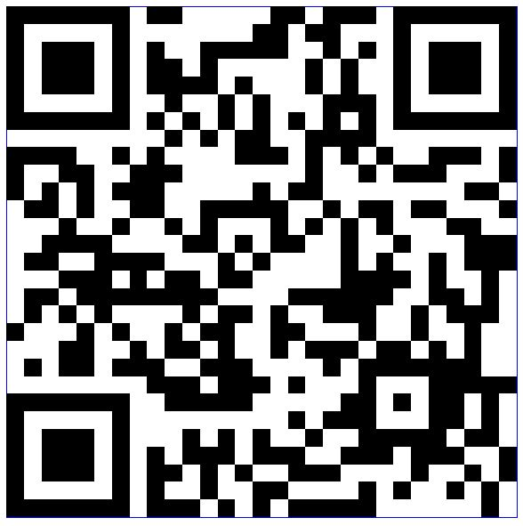

January 10-13 - 10am-12pm - Mary Ann Reserve
This year (like last year) we will be running open-air stall-based activities and events.
If there is enough interest we also intend to run a talent show (for anyone to put on an act/skit/performance) on Thursday evening.
We ask that parents/guardians maintain responsibility for their children during this time but otherwise don't need to be directly involved.
There will be a SA Gov QR check-in available.
If you would like to be kept up to date on what is happening please provide your contact details and any comments.
or access the form via

The team will be visiting the following churches on Sunday January 8th:
And on Saturday January 7th:
SSF2022 is put on free of charge by volunteers from Scripture Union. Click here for more information about Scripture Union and the family missions that are run around South Australia.